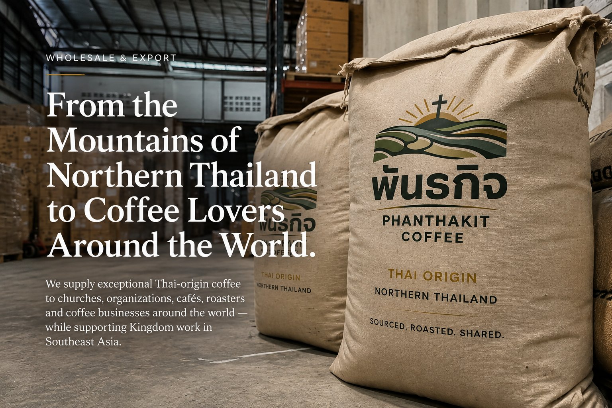

From specialty-grade green beans to roasted retail-ready bags, we work with wholesale partners who share our commitment to quality and purpose—every order supports the farming families and communities of Northern Thailand.
Thailand may not be the first origin that comes to mind when you think of specialty coffee.
That's exactly what makes it interesting.
In the mountains of Northern Thailand, Arabica coffee is grown in high-elevation communities surrounded by forests, traditional crops, and generations of agricultural knowledge. We believe these coffees deserve a place in the international specialty coffee market.
Phanthakit Coffee exists to help connect exceptional Thai coffee with businesses and customers beyond Thailand. Whether you're looking for a distinctive single-origin coffee for your café, a new offering for your roasting business, or a reliable partner for Thai-origin coffee, we'd love to start a conversation.
Freshly roasted Thai-origin coffee for cafés, restaurants, hotels, churches, offices, and organizations. Available in multiple roast profiles and wholesale formats.
Starting from 5kgLarger-format roasted coffee for businesses with higher monthly requirements. Ideal for cafés, hospitality groups, organizations, and coffee programs.
5kg · 10kg · 25kg+Green Thai Arabica for specialty coffee roasters and coffee companies looking to roast in their own facilities. Availability depends on harvest, lot, and supply.
Wholesale & export inquiries welcomeInterested in creating your own Thai coffee? We can explore custom roasting, packaging, and private-label opportunities for qualified partners.
Minimum volumes applyWe currently offer coffee from two different farms in Northern Thailand. Each lot has its own character, processing method, and flavor profile.
A bright and expressive coffee with a clean structure, gentle sweetness, and a distinctive Thai mountain character.
Ban Dula Per is sourced from a small coffee-growing community in Northern Thailand where Arabica is cultivated at high elevation in a cool mountain environment. This lot is designed for buyers looking for a coffee that feels familiar enough to work beautifully as a specialty offering, while still giving customers something they may not have experienced before.
Recommended for: Specialty cafés, pour-over programs, single-origin menus, retail coffee brands, and roasters looking for an unusual Southeast Asian origin.
Request a Sample✓ USDA & EU Organic · Rainforest Alliance
A smooth and balanced coffee from one of Northern Thailand's most recognized Arabica-growing regions.
Doi Saket is located in Chiang Mai Province, where coffee is cultivated in mountainous areas at elevations well suited to Arabica production. The region is known for coffee grown alongside forest and traditional agricultural systems. Our Doi Saket lot offers a balanced cup with approachable sweetness, gentle acidity, and a rich finish.
Recommended for: Espresso programs, filter coffee, specialty cafés, hotels, restaurants, and retail coffee programs looking for a versatile Thai single origin.
Request a SampleThailand has a growing specialty coffee community, particularly in the country's northern mountain regions.
Coffee cultivation in areas around Doi Saket and Thep Sadet has deep roots, with Arabica grown at elevations reaching well above 1,000 meters. The region's forested mountain environment and established coffee-growing communities make Northern Thailand an increasingly interesting specialty origin.
But we think the most interesting part isn't simply the geography. It's the people behind the coffee.
Every coffee has a farmer. Every farm has a story. And every origin deserves the opportunity to reach a wider market.
We specialize in coffee from Thailand, with a particular focus on the country's Northern Arabica-growing regions.
We work through trusted relationships with farmers, producers, and coffee communities in Thailand.
We work with businesses of different sizes, from initial sample orders to recurring wholesale and export relationships.
Phanthakit is a Christian-owned coffee company committed to using business as a means of creating opportunity, strengthening communities, and supporting Gospel-centered ministry.
Your coffee purchase helps support work beyond the coffee itself.
Read Our StoryAdd a distinctive Thai-origin coffee to your portfolio. Green coffee is available for qualified roasting partners.
Explore Green Coffee →Offer your customers something they may have never tasted before: specialty coffee from Northern Thailand, available roasted and prepared for café use.
Request Wholesale Info →Create a distinctive coffee program for guests, restaurants, and hospitality spaces. Custom volume and recurring supply options available.
Looking for a Thai coffee for your next release? We can explore roasted coffee, bulk supply, and selected private-label opportunities.
Serve excellent coffee while supporting work with a larger purpose. Our mission-driven model suits churches, Christian organizations, and missionary groups especially well.
Talk to Us →Tell us a little about your business, your country, the type of coffee you're interested in, and your approximate monthly volume.
We'll help identify the coffee that best matches what you're looking for and arrange a sample for evaluation.
Taste the coffee with your team and see whether it fits your menu, roasting program, or customers.
Begin with a manageable order before committing to larger volumes.
Once you've found the right coffee, we can work together on recurring orders, larger volumes, and future opportunities.
We offer flexible wholesale formats depending on your needs.
Ideal for:
Ideal for:
Ideal for:
Ideal for:
Wholesale pricing is based on coffee, quantity, packaging, destination, and order frequency.
Request Wholesale PricingLooking to roast Thai-origin coffee in your own facility? Phanthakit works with coffee buyers interested in sourcing green Arabica from Northern Thailand.
We can discuss single-farm lots, different processing methods, small trial quantities, recurring supply, larger commercial orders, and international shipping.
We work with international buyers and can coordinate the export process according to the requirements of the destination market and order.
Depending on the coffee and destination, we can discuss export documentation, packaging, freight arrangements, commercial invoices, packing lists, certificates and documentation, shipment coordination, and recurring supply.
International orders are quoted individually. Shipping, customs duties, taxes, import requirements, and destination-country regulations may vary by market and are confirmed before the order is finalized.
We believe coffee should be more than a bag with a country printed on it. Our goal is to provide buyers with meaningful information about each coffee we offer.
Where the coffee was grown.
Who produced the coffee.
Where the coffee was cultivated.
What coffee varieties are present.
How the coffee was processed.
When the coffee was produced.
How the coffee performs in the cup.
As our relationships and sourcing network grow, we're working toward increasingly detailed traceability throughout our supply chain.
Phanthakit was born in Northern Thailand out of a desire to combine business, hospitality, agriculture, and Kingdom work. We've seen firsthand how relationships can create opportunities for people and communities. Coffee became one way to build those relationships.
Our goal is simple: source excellent coffee, create sustainable business, build meaningful relationships, and use the profits to support Kingdom work. We believe business can be both excellent and purposeful.
Our coffees come from Northern Thailand, primarily from coffee-growing communities in the Chiang Mai region.
Yes. We work with qualified roasters and coffee businesses interested in Thai-origin green Arabica.
Yes. We offer roasted coffee for cafés, restaurants, hotels, organizations, and other commercial customers.
Minimums depend on the coffee, packaging format, and destination. Small trial quantities are available for qualified buyers, while international commercial orders typically require larger volumes.
Yes, international orders can be arranged depending on the destination and product. Export requirements and shipping costs are quoted individually.
Yes. Sample requests are encouraged before placing a larger wholesale order.
Selected private-label opportunities may be available depending on quantity, packaging requirements, and production capacity.
Availability depends on the harvest and current supply. Contact us to discuss available lots.
We work through relationships with local farmers and coffee producers and aim to create sustainable demand for quality Thai coffee.
Yes. Phanthakit is a Christian-owned company, and 20% of profits are committed to Kingdom impact and Gospel-centered ministry and community work.